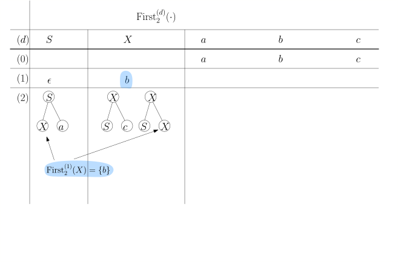
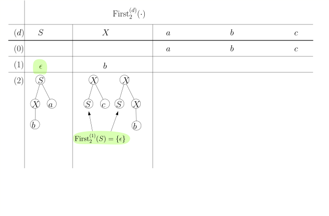
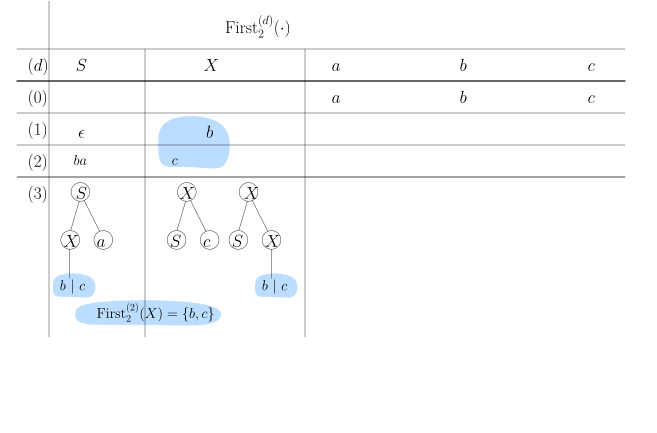
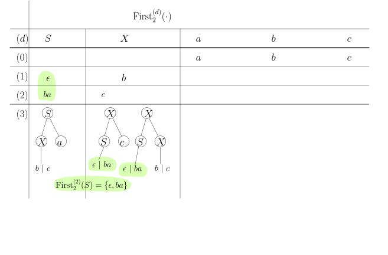
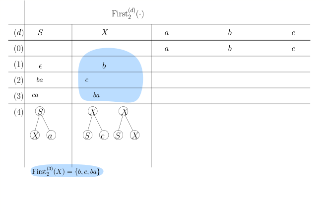
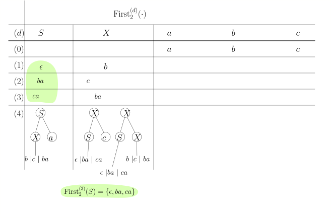
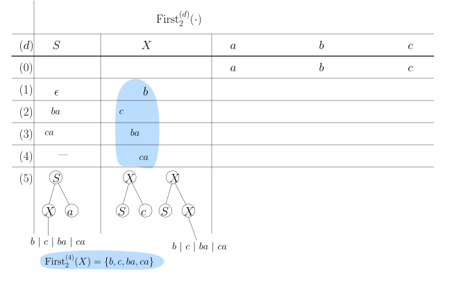
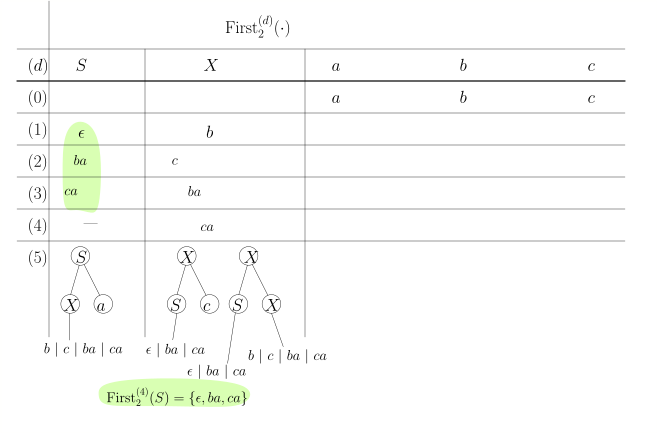

6.4 LL(./course1/wly/06/04-LL1-grammars.wly:2:11$k$./course1/wly/06/04-LL1-grammars.wly:2:14)-Grammatiken./course1/wly/06/04-LL1-grammars.wly:2:19 (nicht im Sommersemester 2026)./course1/wly/06/04-LL1-grammars.wly:2:19
6.4 LL(./course1/wly/06/04-LL1-grammars.wly:2:11$k$./course1/wly/06/04-LL1-grammars.wly:2:14)-Grammatiken./course1/wly/06/04-LL1-grammars.wly:2:19 (nicht im Sommersemester 2026)./course1/wly/06/04-LL1-grammars.wly:2:19
Definition 6.4.1 Grenzform./course1/wly/06/04-LL1-grammars.wly:4:5 Sei ./course1/wly/06/04-LL1-grammars.wly:5:20$G = (\Sigma, N, S, P)$./course1/wly/06/04-LL1-grammars.wly:5:25 eine kontextfreie./course1/wly/06/04-LL1-grammars.wly:5:48 Grammatik. Eine Wortform ./course1/wly/06/04-LL1-grammars.wly:6:9$A \alpha$./course1/wly/06/04-LL1-grammars.wly:6:34 - also eine Wortform,./course1/wly/06/04-LL1-grammars.wly:6:44 die mit einem Nichtterminal beginnt - heißt ./course1/wly/06/04-LL1-grammars.wly:7:9Grenzform./course1/wly/06/04-LL1-grammars.wly:7:54,./course1/wly/06/04-LL1-grammars.wly:7:64 ./course1/wly/06/04-LL1-grammars.wly:7:64 wenn es ein ./course1/wly/06/04-LL1-grammars.wly:8:9$w \in \Sigma^*$./course1/wly/06/04-LL1-grammars.wly:8:21 gibt, so dass es eine./course1/wly/06/04-LL1-grammars.wly:8:37 Linksableitung./course1/wly/06/04-LL1-grammars.wly:9:9
gibt. In anderen Worten: eine Grenzform ist das, was bei./course1/wly/06/04-LL1-grammars.wly:15:9 einem Kellerautomaten auf dem Stack liegt, wenn ein./course1/wly/06/04-LL1-grammars.wly:16:9 Nichtterminal ganz oben liegt../course1/wly/06/04-LL1-grammars.wly:17:9
Grenzformen sind also diejenigen Wortformen, bei denen der./course1/wly/06/04-LL1-grammars.wly:19:5 Kellerautomat eine Entscheidung treffen muss, weil er./course1/wly/06/04-LL1-grammars.wly:20:5 eventuell mehrere Produktionen ./course1/wly/06/04-LL1-grammars.wly:21:5$A \rightarrow \beta$./course1/wly/06/04-LL1-grammars.wly:21:36 zur./course1/wly/06/04-LL1-grammars.wly:21:57 Auswahl hat. In diesem Teilkapitel wollen wir./course1/wly/06/04-LL1-grammars.wly:22:5 herausarbeiten, unter welchen Umständen wir die richtige./course1/wly/06/04-LL1-grammars.wly:23:5 Auswahl treffen können, auch wenn wir nur wenige weitere./course1/wly/06/04-LL1-grammars.wly:24:5 Zeichen unseres Inputwortes lesen dürfen../course1/wly/06/04-LL1-grammars.wly:25:5
Definition 6.4.2./course1/wly/06/04-LL1-grammars.wly:27:5 ./course1/wly/06/04-LL1-grammars.wly:27:5 Für ein Wort ./course1/wly/06/04-LL1-grammars.wly:28:9$w \in \Sigma^*$./course1/wly/06/04-LL1-grammars.wly:28:22 und eine natürliche Zahl./course1/wly/06/04-LL1-grammars.wly:28:38 ./course1/wly/06/04-LL1-grammars.wly:29:9$k \in \N$./course1/wly/06/04-LL1-grammars.wly:29:9 sei ./course1/wly/06/04-LL1-grammars.wly:29:19$\first_k(w)$./course1/wly/06/04-LL1-grammars.wly:29:24 wie folgt definiert:./course1/wly/06/04-LL1-grammars.wly:29:37
In Worten: ./course1/wly/06/04-LL1-grammars.wly:38:9$\first_{k}(w)$./course1/wly/06/04-LL1-grammars.wly:38:20 besteht aus den ersten ./course1/wly/06/04-LL1-grammars.wly:38:35$k$./course1/wly/06/04-LL1-grammars.wly:38:59 ./course1/wly/06/04-LL1-grammars.wly:38:62 Zeichen von ./course1/wly/06/04-LL1-grammars.wly:39:9$w$./course1/wly/06/04-LL1-grammars.wly:39:21 (oder aus ganz ./course1/wly/06/04-LL1-grammars.wly:39:24$w$./course1/wly/06/04-LL1-grammars.wly:39:40,./course1/wly/06/04-LL1-grammars.wly:39:43 falls es weniger als./course1/wly/06/04-LL1-grammars.wly:39:43 ./course1/wly/06/04-LL1-grammars.wly:40:9$k$./course1/wly/06/04-LL1-grammars.wly:40:9 lang ist)../course1/wly/06/04-LL1-grammars.wly:40:12
Definition 6.4.3 ./course1/wly/06/04-LL1-grammars.wly:42:5LL(./course1/wly/06/04-LL1-grammars.wly:42:5$k$./course1/wly/06/04-LL1-grammars.wly:43:13)-Grammatiken./course1/wly/06/04-LL1-grammars.wly:43:16 Eine kontextfreie Grammatik./course1/wly/06/04-LL1-grammars.wly:43:30 ./course1/wly/06/04-LL1-grammars.wly:44:9$G = (\Sigma, N, S, P)$./course1/wly/06/04-LL1-grammars.wly:44:9 ist eine ./course1/wly/06/04-LL1-grammars.wly:44:32LL(./course1/wly/06/04-LL1-grammars.wly:44:32$k$./course1/wly/06/04-LL1-grammars.wly:44:45 )-Grammatik, wenn./course1/wly/06/04-LL1-grammars.wly:44:48 für jede Grenzform ./course1/wly/06/04-LL1-grammars.wly:45:9$A \alpha$./course1/wly/06/04-LL1-grammars.wly:45:28 und für jedes Paar./course1/wly/06/04-LL1-grammars.wly:45:38
verschiedener Produktionen (also ./course1/wly/06/04-LL1-grammars.wly:52:9$\beta \ne \gamma$./course1/wly/06/04-LL1-grammars.wly:52:42)./course1/wly/06/04-LL1-grammars.wly:52:60 ./course1/wly/06/04-LL1-grammars.wly:52:60 folgendes gilt: wenn./course1/wly/06/04-LL1-grammars.wly:53:9
dann müssen sich ./course1/wly/06/04-LL1-grammars.wly:60:9$x$./course1/wly/06/04-LL1-grammars.wly:60:26 und ./course1/wly/06/04-LL1-grammars.wly:60:29$y$./course1/wly/06/04-LL1-grammars.wly:60:34 in den ersten ./course1/wly/06/04-LL1-grammars.wly:60:37$k$./course1/wly/06/04-LL1-grammars.wly:60:52 Zeichen./course1/wly/06/04-LL1-grammars.wly:60:55 unterscheiden, also./course1/wly/06/04-LL1-grammars.wly:61:9
Intuitiv gesprochen: wenn wir bereits eine ersten Teil ./course1/wly/06/04-LL1-grammars.wly:67:5$w$./course1/wly/06/04-LL1-grammars.wly:67:60 ./course1/wly/06/04-LL1-grammars.wly:67:63 unseres Zielwortes abgeleitet haben, dann können wir die./course1/wly/06/04-LL1-grammars.wly:68:5 nächste anzuwendende Produktion eindeutig bestimmen, indem./course1/wly/06/04-LL1-grammars.wly:69:5 wir die nächsten ./course1/wly/06/04-LL1-grammars.wly:70:5$k$./course1/wly/06/04-LL1-grammars.wly:70:22 Zeichen des Zielwortes lesen../course1/wly/06/04-LL1-grammars.wly:70:25
Übungsaufgabe 6.4.1./course1/wly/06/04-LL1-grammars.wly:72:5 ./course1/wly/06/04-LL1-grammars.wly:72:5 Negieren Sie die Definition, d.h., schreiben Sie eine./course1/wly/06/04-LL1-grammars.wly:73:9 Aussage der Form ./course1/wly/06/04-LL1-grammars.wly:74:9Wenn ./course1/wly/06/04-LL1-grammars.wly:74:27$G$./course1/wly/06/04-LL1-grammars.wly:74:32 nicht ./course1/wly/06/04-LL1-grammars.wly:74:35LL(./course1/wly/06/04-LL1-grammars.wly:74:35$k$./course1/wly/06/04-LL1-grammars.wly:74:45)./course1/wly/06/04-LL1-grammars.wly:74:48 ist, dann gibt./course1/wly/06/04-LL1-grammars.wly:74:48 es..../course1/wly/06/04-LL1-grammars.wly:75:9
Beispiel 6.4.4./course1/wly/06/04-LL1-grammars.wly:77:5 ./course1/wly/06/04-LL1-grammars.wly:77:5 Die Klammern-Grammatik./course1/wly/06/04-LL1-grammars.wly:78:9
ist LL(1)../course1/wly/06/04-LL1-grammars.wly:85:9
Beweis Folgen wir der Definition von LL(1): für jedes Paar./course1/wly/06/04-LL1-grammars.wly:88:13 verschiedener Regeln muss etwas gelten. Wir haben hier./course1/wly/06/04-LL1-grammars.wly:89:13 keine Auswahl, denn es gibt ja nur ein Paar. Also müssen./course1/wly/06/04-LL1-grammars.wly:90:13 wir zeigen, dass, falls./course1/wly/06/04-LL1-grammars.wly:91:13
gilt, dann auch ./course1/wly/06/04-LL1-grammars.wly:98:13$\first_1(x) \ne \first_2(y)$./course1/wly/06/04-LL1-grammars.wly:98:29 gilt../course1/wly/06/04-LL1-grammars.wly:98:58 Offensichtlich ist ./course1/wly/06/04-LL1-grammars.wly:99:13$\first_2(y) =$./course1/wly/06/04-LL1-grammars.wly:99:32 " ./course1/wly/06/04-LL1-grammars.wly:99:47$\texttt{(}$./course1/wly/06/04-LL1-grammars.wly:99:50"../course1/wly/06/04-LL1-grammars.wly:99:62 Was./course1/wly/06/04-LL1-grammars.wly:99:62 kann ./course1/wly/06/04-LL1-grammars.wly:100:13$\first_k(x)$./course1/wly/06/04-LL1-grammars.wly:100:18 sein?./course1/wly/06/04-LL1-grammars.wly:100:31
Behauptung../course1/wly/06/04-LL1-grammars.wly:102:14 Wenn./course1/wly/06/04-LL1-grammars.wly:102:26 ./course1/wly/06/04-LL1-grammars.wly:103:13$S \rightarrow \delta \in (\Sigma \cup N)^*$./course1/wly/06/04-LL1-grammars.wly:103:13,./course1/wly/06/04-LL1-grammars.wly:103:57 dann steht./course1/wly/06/04-LL1-grammars.wly:103:57 jedes ./course1/wly/06/04-LL1-grammars.wly:104:13$S$./course1/wly/06/04-LL1-grammars.wly:104:19 in ./course1/wly/06/04-LL1-grammars.wly:104:22$\delta$./course1/wly/06/04-LL1-grammars.wly:104:26 entweder am Ende von ./course1/wly/06/04-LL1-grammars.wly:104:34$\delta$./course1/wly/06/04-LL1-grammars.wly:104:56 oder./course1/wly/06/04-LL1-grammars.wly:104:64 unmittelbar vor einem " ./course1/wly/06/04-LL1-grammars.wly:105:13$\texttt{)}$./course1/wly/06/04-LL1-grammars.wly:105:37"../course1/wly/06/04-LL1-grammars.wly:105:49 Das folgt per./course1/wly/06/04-LL1-grammars.wly:105:49 Induktion über die Länge der Ableitung. Wenn es also für./course1/wly/06/04-LL1-grammars.wly:106:13 ./course1/wly/06/04-LL1-grammars.wly:107:13$\delta$./course1/wly/06/04-LL1-grammars.wly:107:13 gilt und wir die Produktion ./course1/wly/06/04-LL1-grammars.wly:107:21$S \rightarrow (S)S$./course1/wly/06/04-LL1-grammars.wly:107:50 ./course1/wly/06/04-LL1-grammars.wly:107:70 auf ./course1/wly/06/04-LL1-grammars.wly:108:13$\delta$./course1/wly/06/04-LL1-grammars.wly:108:17 anwenden, dann gilt es für jedes "alte" ./course1/wly/06/04-LL1-grammars.wly:108:25$S$./course1/wly/06/04-LL1-grammars.wly:108:66 ./course1/wly/06/04-LL1-grammars.wly:108:69 und auch für die beiden neu erzeugten; wenn wir./course1/wly/06/04-LL1-grammars.wly:109:13 ./course1/wly/06/04-LL1-grammars.wly:110:13$S \rightarrow \epsilon$./course1/wly/06/04-LL1-grammars.wly:110:13 anwenden, dann verschwindet ein./course1/wly/06/04-LL1-grammars.wly:110:37 ./course1/wly/06/04-LL1-grammars.wly:111:13$S$./course1/wly/06/04-LL1-grammars.wly:111:13,./course1/wly/06/04-LL1-grammars.wly:111:16 die Behauptung gilt aber nach wie vor für alle./course1/wly/06/04-LL1-grammars.wly:111:16 anderen ./course1/wly/06/04-LL1-grammars.wly:112:13$S$./course1/wly/06/04-LL1-grammars.wly:112:21 in ./course1/wly/06/04-LL1-grammars.wly:112:24$\delta$./course1/wly/06/04-LL1-grammars.wly:112:28../course1/wly/06/04-LL1-grammars.wly:112:36 Wir folgern also, dass für das./course1/wly/06/04-LL1-grammars.wly:112:36 ./course1/wly/06/04-LL1-grammars.wly:113:13$\alpha$./course1/wly/06/04-LL1-grammars.wly:113:13 den beiden obigne Herleitungen./course1/wly/06/04-LL1-grammars.wly:113:21 ./course1/wly/06/04-LL1-grammars.wly:114:13$\first_k(\alpha) \in \{\epsilon, \texttt{)}\}$./course1/wly/06/04-LL1-grammars.wly:114:13 gilt../course1/wly/06/04-LL1-grammars.wly:114:60 Keines davon ist ein Nichtterminal, und so muss auch./course1/wly/06/04-LL1-grammars.wly:115:13 ./course1/wly/06/04-LL1-grammars.wly:116:13$\first_k(\alpha) = \first_k(x)$./course1/wly/06/04-LL1-grammars.wly:116:13 gelten. Zusammenfassend./course1/wly/06/04-LL1-grammars.wly:116:45 gesagt:./course1/wly/06/04-LL1-grammars.wly:117:13
und somit sind sie verschieden. Wir folgern, dass ./course1/wly/06/04-LL1-grammars.wly:124:13$G$./course1/wly/06/04-LL1-grammars.wly:124:63 eine./course1/wly/06/04-LL1-grammars.wly:124:66 LL(1)-Grammatik ist../course1/wly/06/04-LL1-grammars.wly:125:13A\(\square\)
Sehen Sie, dass die ./course1/wly/06/04-LL1-grammars.wly:127:5LL(./course1/wly/06/04-LL1-grammars.wly:127:5$k$./course1/wly/06/04-LL1-grammars.wly:127:28)-Bedingung./course1/wly/06/04-LL1-grammars.wly:127:31 der Aussage "der./course1/wly/06/04-LL1-grammars.wly:127:31 Backtrack-Baum hat keine langen Sackgassen" ähnelt (aber./course1/wly/06/04-LL1-grammars.wly:128:5 nicht völlig äquivalent dazu ist). Wenn ./course1/wly/06/04-LL1-grammars.wly:129:5$G$./course1/wly/06/04-LL1-grammars.wly:129:45 eine LL(./course1/wly/06/04-LL1-grammars.wly:129:48 ./course1/wly/06/04-LL1-grammars.wly:130:5$k$./course1/wly/06/04-LL1-grammars.wly:130:5)-Grammatik./course1/wly/06/04-LL1-grammars.wly:130:8 ist und wir den Backtrack-Baum für ein Wort./course1/wly/06/04-LL1-grammars.wly:130:8 bauen, dann gilt: sobald wir in einer Sackgasse ./course1/wly/06/04-LL1-grammars.wly:131:5$k$./course1/wly/06/04-LL1-grammars.wly:131:53 neue./course1/wly/06/04-LL1-grammars.wly:131:56 Terminalsymbole am "Terminalpräfix" der Wortform./course1/wly/06/04-LL1-grammars.wly:132:5 hergeleitet haben, merken wir, dass wir in einer Sackgasse./course1/wly/06/04-LL1-grammars.wly:133:5 sind. Mit Terminalpräfix meine ich den längsten Präfix./course1/wly/06/04-LL1-grammars.wly:134:5 einer Wortform, der ausschließlich aus Terminalen besteht../course1/wly/06/04-LL1-grammars.wly:135:5 Allerdings muss nicht jeder Ableitungsschritt den./course1/wly/06/04-LL1-grammars.wly:136:5 Terminalpräfix wachsen lassen (Regeln wie./course1/wly/06/04-LL1-grammars.wly:137:5 ./course1/wly/06/04-LL1-grammars.wly:138:5$X \rightarrow YbZ$./course1/wly/06/04-LL1-grammars.wly:138:5 zum Beispiel ersetzen einfach das./course1/wly/06/04-LL1-grammars.wly:138:24 erste Nichtterminal), aber "moralisch" geschieht etwas./course1/wly/06/04-LL1-grammars.wly:139:5 ähnliches). Wenn umgekehrt eine Grammatik ./course1/wly/06/04-LL1-grammars.wly:140:5nicht./course1/wly/06/04-LL1-grammars.wly:140:48 LL( ./course1/wly/06/04-LL1-grammars.wly:140:54$k$./course1/wly/06/04-LL1-grammars.wly:140:59)./course1/wly/06/04-LL1-grammars.wly:140:62 ./course1/wly/06/04-LL1-grammars.wly:140:62 ist, dann muss der Backtrack-Baum beiden Ableitungen./course1/wly/06/04-LL1-grammars.wly:141:5
mindestens so lange weiterverfolgen, bis der./course1/wly/06/04-LL1-grammars.wly:148:5 Terminalpräfix ./course1/wly/06/04-LL1-grammars.wly:149:5$k$./course1/wly/06/04-LL1-grammars.wly:149:20 weitere Zeichen dazugewonnen hat. Der./course1/wly/06/04-LL1-grammars.wly:149:23 Baum bekommt also dementsprechend lange Sackgassen../course1/wly/06/04-LL1-grammars.wly:150:5
Übungsaufgabe 6.4.2./course1/wly/06/04-LL1-grammars.wly:152:5 ./course1/wly/06/04-LL1-grammars.wly:152:5 (Beispiel 5.3 aus ./course1/wly/06/04-LL1-grammars.wly:153:9The Theory of Parsing, Translation, and./course1/wly/06/04-LL1-grammars.wly:153:28 Compiling./course1/wly/06/04-LL1-grammars.wly:154:9 von Alfred V. Aho und Jeffrey D. Ullman)../course1/wly/06/04-LL1-grammars.wly:154:19 Betrachten wir die Grammatik./course1/wly/06/04-LL1-grammars.wly:155:9
Zeigen Sie, dass diese Grammatik LL(2) ist, aber nicht./course1/wly/06/04-LL1-grammars.wly:164:9 LL(1). ./course1/wly/06/04-LL1-grammars.wly:165:9Tip../course1/wly/06/04-LL1-grammars.wly:165:17 Leiten Sie erst einmal ein Dutzend./course1/wly/06/04-LL1-grammars.wly:165:22 verschiedene Wörter ab und finden dann eine./course1/wly/06/04-LL1-grammars.wly:166:9 "normalsprachliche" Beschreibung dieser Sprache../course1/wly/06/04-LL1-grammars.wly:167:9 Beschreiben Sie dann alle möglichen Wortformen ./course1/wly/06/04-LL1-grammars.wly:168:9$\alpha$./course1/wly/06/04-LL1-grammars.wly:168:56 ./course1/wly/06/04-LL1-grammars.wly:168:64 mit ./course1/wly/06/04-LL1-grammars.wly:169:9$S \Step{}^* \alpha$./course1/wly/06/04-LL1-grammars.wly:169:13../course1/wly/06/04-LL1-grammars.wly:169:33
Übungsaufgabe 6.4.3./course1/wly/06/04-LL1-grammars.wly:171:5 ./course1/wly/06/04-LL1-grammars.wly:171:5 Schreiben Sie eine äquivalente Grammatik zu der vorherigen./course1/wly/06/04-LL1-grammars.wly:172:9 Sprache, die LL(1) ist. (Warnung: Ich weiß nicht, ob das./course1/wly/06/04-LL1-grammars.wly:173:9 überhaupt geht)../course1/wly/06/04-LL1-grammars.wly:174:9
Übungsaufgabe 6.4.4./course1/wly/06/04-LL1-grammars.wly:176:5 ./course1/wly/06/04-LL1-grammars.wly:176:5 Betrachten wir die Grammatik ./course1/wly/06/04-LL1-grammars.wly:178:9$G$./course1/wly/06/04-LL1-grammars.wly:178:38:./course1/wly/06/04-LL1-grammars.wly:178:41
Sie erzeugt die Sprache./course1/wly/06/04-LL1-grammars.wly:186:9
also Wörter, wo auf beliebig viele ./course1/wly/06/04-LL1-grammars.wly:192:9$a$./course1/wly/06/04-LL1-grammars.wly:192:44's./course1/wly/06/04-LL1-grammars.wly:192:47 eine Folge von./course1/wly/06/04-LL1-grammars.wly:192:47 ./course1/wly/06/04-LL1-grammars.wly:193:9höchstens./course1/wly/06/04-LL1-grammars.wly:193:10 so vielen ./course1/wly/06/04-LL1-grammars.wly:193:20$b$./course1/wly/06/04-LL1-grammars.wly:193:31's./course1/wly/06/04-LL1-grammars.wly:193:34 folgt. Geben Sie diese./course1/wly/06/04-LL1-grammars.wly:193:34 Grammatik in den./course1/wly/06/04-LL1-grammars.wly:194:9 ./course1/wly/06/04-LL1-grammars.wly:195:9Parser-Simulator./course1/wly/06/04-LL1-grammars.wly:195:10 ./course1/wly/06/04-LL1-grammars.wly:195:124 ein und finden Wörter mit langen Sackgassen. Zeigen Sie,./course1/wly/06/04-LL1-grammars.wly:196:9 dass diese Grammatik nicht ./course1/wly/06/04-LL1-grammars.wly:197:9LL./course1/wly/06/04-LL1-grammars.wly:197:9$(k)$./course1/wly/06/04-LL1-grammars.wly:197:38 ist, für kein./course1/wly/06/04-LL1-grammars.wly:197:43 ./course1/wly/06/04-LL1-grammars.wly:198:9$k \in \N$./course1/wly/06/04-LL1-grammars.wly:198:9../course1/wly/06/04-LL1-grammars.wly:198:19
Übungsaufgabe 6.4.5./course1/wly/06/04-LL1-grammars.wly:200:5 ./course1/wly/06/04-LL1-grammars.wly:200:5 Sei ./course1/wly/06/04-LL1-grammars.wly:201:9$t \in \N$./course1/wly/06/04-LL1-grammars.wly:201:13 eine feste, im Voraus bekannte Zahl../course1/wly/06/04-LL1-grammars.wly:201:23 Betrachten wir die Sprache./course1/wly/06/04-LL1-grammars.wly:202:9
also die Wörter der Form ./course1/wly/06/04-LL1-grammars.wly:208:9$a^m b^n$./course1/wly/06/04-LL1-grammars.wly:208:34 mit ./course1/wly/06/04-LL1-grammars.wly:208:43$n \leq m \leq n+t$./course1/wly/06/04-LL1-grammars.wly:208:48../course1/wly/06/04-LL1-grammars.wly:208:67 ./course1/wly/06/04-LL1-grammars.wly:208:67 Schreiben Sie für ./course1/wly/06/04-LL1-grammars.wly:209:9$L_3$./course1/wly/06/04-LL1-grammars.wly:209:27 eine Grammatik, geben Sie diese im./course1/wly/06/04-LL1-grammars.wly:209:32 ./course1/wly/06/04-LL1-grammars.wly:210:9Parser-Simulator./course1/wly/06/04-LL1-grammars.wly:210:10 ./course1/wly/06/04-LL1-grammars.wly:210:119 ein und schauen, wie lang die Sackgassen werden können../course1/wly/06/04-LL1-grammars.wly:211:9 Zeigen Sie, dass ./course1/wly/06/04-LL1-grammars.wly:212:9$L_3$./course1/wly/06/04-LL1-grammars.wly:212:26 eine ./course1/wly/06/04-LL1-grammars.wly:212:31LL./course1/wly/06/04-LL1-grammars.wly:212:31$(k)$./course1/wly/06/04-LL1-grammars.wly:212:39 -Grammatik ist. Für./course1/wly/06/04-LL1-grammars.wly:212:44 welchen Wert von ./course1/wly/06/04-LL1-grammars.wly:213:9$k$./course1/wly/06/04-LL1-grammars.wly:213:26?./course1/wly/06/04-LL1-grammars.wly:213:29 Ist ./course1/wly/06/04-LL1-grammars.wly:213:29$L_t$./course1/wly/06/04-LL1-grammars.wly:213:35 (für im Voraus bekanntes./course1/wly/06/04-LL1-grammars.wly:213:40 ./course1/wly/06/04-LL1-grammars.wly:214:9$t$./course1/wly/06/04-LL1-grammars.wly:214:9 ) eine ./course1/wly/06/04-LL1-grammars.wly:214:12LL./course1/wly/06/04-LL1-grammars.wly:214:12$(k)$./course1/wly/06/04-LL1-grammars.wly:214:22 -Grammatik? Für welchen Wert von ./course1/wly/06/04-LL1-grammars.wly:214:27$k$./course1/wly/06/04-LL1-grammars.wly:214:61?./course1/wly/06/04-LL1-grammars.wly:214:64
Wir wollen nun erarbeiten, wie wir für eine LL ./course1/wly/06/04-LL1-grammars.wly:219:5$(k)$./course1/wly/06/04-LL1-grammars.wly:219:52 ./course1/wly/06/04-LL1-grammars.wly:219:57 -Grammatik einen Parser, also im Prinzip einen./course1/wly/06/04-LL1-grammars.wly:220:5 deterministischen Pushdown-Automaten schreiben können. Wir./course1/wly/06/04-LL1-grammars.wly:221:5 tasten uns langsam voran. Wir beginnen mit einer./course1/wly/06/04-LL1-grammars.wly:222:5 Verallgemeinerung von ./course1/wly/06/04-LL1-grammars.wly:223:5$\first_k$./course1/wly/06/04-LL1-grammars.wly:223:27 von Wörtern auf./course1/wly/06/04-LL1-grammars.wly:223:37 ./course1/wly/06/04-LL1-grammars.wly:224:5Wortformen./course1/wly/06/04-LL1-grammars.wly:224:6 (die also Nichtterminale beinhalten können)../course1/wly/06/04-LL1-grammars.wly:224:17
Definition 6.4.5./course1/wly/06/04-LL1-grammars.wly:226:5 ./course1/wly/06/04-LL1-grammars.wly:226:5 Sei eine kontextfreie Grammatik ./course1/wly/06/04-LL1-grammars.wly:227:9$G = (\Sigma, N, S, P)$./course1/wly/06/04-LL1-grammars.wly:227:41 ./course1/wly/06/04-LL1-grammars.wly:227:64 und eine Wortform ./course1/wly/06/04-LL1-grammars.wly:228:9$\alpha \in (\Sigma \cup N)^*$./course1/wly/06/04-LL1-grammars.wly:228:27 gegeben../course1/wly/06/04-LL1-grammars.wly:228:57 Wir definieren./course1/wly/06/04-LL1-grammars.wly:229:9
Wir können nun die ./course1/wly/06/04-LL1-grammars.wly:235:5LL./course1/wly/06/04-LL1-grammars.wly:235:5$(k)$./course1/wly/06/04-LL1-grammars.wly:235:26-Bedingung./course1/wly/06/04-LL1-grammars.wly:235:31 äquivalent./course1/wly/06/04-LL1-grammars.wly:235:31 formulieren:./course1/wly/06/04-LL1-grammars.wly:236:5
Definition / Beobachtung 6.4.6./course1/wly/06/04-LL1-grammars.wly:238:5 ./course1/wly/06/04-LL1-grammars.wly:238:5 Eine Grammatik ./course1/wly/06/04-LL1-grammars.wly:240:9$G$./course1/wly/06/04-LL1-grammars.wly:240:24 ist ./course1/wly/06/04-LL1-grammars.wly:240:27LL./course1/wly/06/04-LL1-grammars.wly:240:27$(k)$./course1/wly/06/04-LL1-grammars.wly:240:34 genau dann, wenn für alle./course1/wly/06/04-LL1-grammars.wly:240:39 Grenzformen ./course1/wly/06/04-LL1-grammars.wly:241:9$A \alpha$./course1/wly/06/04-LL1-grammars.wly:241:21 und alle Produktionen mit ./course1/wly/06/04-LL1-grammars.wly:241:31$A$./course1/wly/06/04-LL1-grammars.wly:241:58 auf./course1/wly/06/04-LL1-grammars.wly:241:61 der linken Seite, also./course1/wly/06/04-LL1-grammars.wly:242:9
die Mengen ./course1/wly/06/04-LL1-grammars.wly:251:9$\First(\beta_i \alpha)$./course1/wly/06/04-LL1-grammars.wly:251:20 paarweise disjunkt./course1/wly/06/04-LL1-grammars.wly:251:44 sind (wenn also keine zwei dieser Mengen ein gemeinsames./course1/wly/06/04-LL1-grammars.wly:252:9 Element enthalten)../course1/wly/06/04-LL1-grammars.wly:253:9
Nehmen wir eine Momentaufnahme unseres Kellerautomaten. Er./course1/wly/06/04-LL1-grammars.wly:255:5 hat den Präfix ./course1/wly/06/04-LL1-grammars.wly:256:5$x$./course1/wly/06/04-LL1-grammars.wly:256:20 des Eingabewortes ./course1/wly/06/04-LL1-grammars.wly:256:23$xy$./course1/wly/06/04-LL1-grammars.wly:256:42 gelesen und eine./course1/wly/06/04-LL1-grammars.wly:256:46 Linksableitung./course1/wly/06/04-LL1-grammars.wly:257:5
durchgeführt. Die Wortform ./course1/wly/06/04-LL1-grammars.wly:263:5$\alpha$./course1/wly/06/04-LL1-grammars.wly:263:32 ist genau das, was im./course1/wly/06/04-LL1-grammars.wly:263:40 Moment auf dem Stack des Automaten liegt (um ganz genau zu./course1/wly/06/04-LL1-grammars.wly:264:5 sein: ./course1/wly/06/04-LL1-grammars.wly:265:5\(\alpha\texttt{\$}\)./course1/wly/06/04-LL1-grammars.wly:265:11 liegt auf dem Stack). Wenn./course1/wly/06/04-LL1-grammars.wly:265:32 ./course1/wly/06/04-LL1-grammars.wly:266:5$\alpha$./course1/wly/06/04-LL1-grammars.wly:266:5 mit einem Terminalsymbol ./course1/wly/06/04-LL1-grammars.wly:266:13$c$./course1/wly/06/04-LL1-grammars.wly:266:39 beginnt, so ist./course1/wly/06/04-LL1-grammars.wly:266:42 klar, was wir machen müssen: wir schauen, ob ./course1/wly/06/04-LL1-grammars.wly:267:5$y$./course1/wly/06/04-LL1-grammars.wly:267:50 mit ./course1/wly/06/04-LL1-grammars.wly:267:53$c$./course1/wly/06/04-LL1-grammars.wly:267:58 ./course1/wly/06/04-LL1-grammars.wly:267:61 beginnt. Wenn ja, lesen wir ./course1/wly/06/04-LL1-grammars.wly:268:5$c$./course1/wly/06/04-LL1-grammars.wly:268:33 und poppen es vom Stack../course1/wly/06/04-LL1-grammars.wly:268:36 Der schwierige Fall ist, wenn ./course1/wly/06/04-LL1-grammars.wly:269:5$\alpha$./course1/wly/06/04-LL1-grammars.wly:269:35 mit einem./course1/wly/06/04-LL1-grammars.wly:269:43 Nichtterminal beginnt. Nochmal von vorn: im schwierigen./course1/wly/06/04-LL1-grammars.wly:270:5 Fall liegt auf dem Stack (oberhalb vom ./course1/wly/06/04-LL1-grammars.wly:271:5\(\$\)./course1/wly/06/04-LL1-grammars.wly:271:44)./course1/wly/06/04-LL1-grammars.wly:271:50 eine./course1/wly/06/04-LL1-grammars.wly:271:50 Wortform, die mit einem Nichtterminal beginnt, also./course1/wly/06/04-LL1-grammars.wly:272:5 ./course1/wly/06/04-LL1-grammars.wly:273:5$A \alpha$./course1/wly/06/04-LL1-grammars.wly:273:5../course1/wly/06/04-LL1-grammars.wly:273:15 Das bedeutet, dass der Automat per./course1/wly/06/04-LL1-grammars.wly:273:15 Linksableitung bis jetzt./course1/wly/06/04-LL1-grammars.wly:274:5
hergeleitet hat. Der Automat muss sich nun zwischen allen./course1/wly/06/04-LL1-grammars.wly:280:5 Regeln für ./course1/wly/06/04-LL1-grammars.wly:281:5$A$./course1/wly/06/04-LL1-grammars.wly:281:16 entscheiden:./course1/wly/06/04-LL1-grammars.wly:281:19
Der Automat betrachtet nun die nächsten ./course1/wly/06/04-LL1-grammars.wly:290:5$k$./course1/wly/06/04-LL1-grammars.wly:290:45 ./course1/wly/06/04-LL1-grammars.wly:290:48 Eingabesymbole, also ./course1/wly/06/04-LL1-grammars.wly:291:5$\first_k(y)$./course1/wly/06/04-LL1-grammars.wly:291:26 (wir gehen mal davon./course1/wly/06/04-LL1-grammars.wly:291:39 aus, dass er das kann; programmieren könnten wir das auf./course1/wly/06/04-LL1-grammars.wly:292:5 jeden Fall; ob man es im strengen Framework des./course1/wly/06/04-LL1-grammars.wly:293:5 Kellerautomaten hinkriegt, werden wir später sehen). Wenn./course1/wly/06/04-LL1-grammars.wly:294:5 ./course1/wly/06/04-LL1-grammars.wly:295:5$G$./course1/wly/06/04-LL1-grammars.wly:295:5 eine ./course1/wly/06/04-LL1-grammars.wly:295:8LL./course1/wly/06/04-LL1-grammars.wly:295:8$(k)$./course1/wly/06/04-LL1-grammars.wly:295:16-Grammatik./course1/wly/06/04-LL1-grammars.wly:295:21 ist, dann gibt es höchstens./course1/wly/06/04-LL1-grammars.wly:295:21 eine Regel ./course1/wly/06/04-LL1-grammars.wly:296:5$A \rightarrow \beta_i$./course1/wly/06/04-LL1-grammars.wly:296:16 mit./course1/wly/06/04-LL1-grammars.wly:296:39
da ja nach obiger Beobachtung diese Mengen disjunkt sind../course1/wly/06/04-LL1-grammars.wly:302:5 Wenn ./course1/wly/06/04-LL1-grammars.wly:303:5$\first_k(y)$./course1/wly/06/04-LL1-grammars.wly:303:10 in ./course1/wly/06/04-LL1-grammars.wly:303:23keiner./course1/wly/06/04-LL1-grammars.wly:303:28 dieser Mengen enthalten./course1/wly/06/04-LL1-grammars.wly:303:35 ist, so kann die Ableitung offensichtlich nicht./course1/wly/06/04-LL1-grammars.wly:304:5 vervollständigt werden, und wir schließen, dass./course1/wly/06/04-LL1-grammars.wly:305:5 ./course1/wly/06/04-LL1-grammars.wly:306:5$xy \not \in L(G)$./course1/wly/06/04-LL1-grammars.wly:306:5 ist. Wenn es ./course1/wly/06/04-LL1-grammars.wly:306:23genau ein./course1/wly/06/04-LL1-grammars.wly:306:38 ./course1/wly/06/04-LL1-grammars.wly:306:48$\beta_i$./course1/wly/06/04-LL1-grammars.wly:306:49 gibt./course1/wly/06/04-LL1-grammars.wly:306:58 mit ./course1/wly/06/04-LL1-grammars.wly:307:5$\first_k(y) \in \first_k(\beta_i \alpha)$./course1/wly/06/04-LL1-grammars.wly:307:9,./course1/wly/06/04-LL1-grammars.wly:307:51 dann ist./course1/wly/06/04-LL1-grammars.wly:307:51 ./course1/wly/06/04-LL1-grammars.wly:308:5$A \rightarrow \beta_i$./course1/wly/06/04-LL1-grammars.wly:308:5 die "richtige" Produktion. Wir./course1/wly/06/04-LL1-grammars.wly:308:28 wenden sie an, ersetzen also ./course1/wly/06/04-LL1-grammars.wly:309:5$A$./course1/wly/06/04-LL1-grammars.wly:309:34 auf dem Stack durch./course1/wly/06/04-LL1-grammars.wly:309:37 ./course1/wly/06/04-LL1-grammars.wly:310:5$\beta_i$./course1/wly/06/04-LL1-grammars.wly:310:5../course1/wly/06/04-LL1-grammars.wly:310:14 Falls es zwei oder mehr Produktionen./course1/wly/06/04-LL1-grammars.wly:310:14 ./course1/wly/06/04-LL1-grammars.wly:311:5$A \rightarrow \beta_i$./course1/wly/06/04-LL1-grammars.wly:311:5 gibt mit./course1/wly/06/04-LL1-grammars.wly:311:28 ./course1/wly/06/04-LL1-grammars.wly:312:5$\first_k(y) \in \first_k(\beta_i \alpha)$./course1/wly/06/04-LL1-grammars.wly:312:5,./course1/wly/06/04-LL1-grammars.wly:312:47 dann ist die./course1/wly/06/04-LL1-grammars.wly:312:47 Grammatik nicht ./course1/wly/06/04-LL1-grammars.wly:313:5LL./course1/wly/06/04-LL1-grammars.wly:313:5$(k)$./course1/wly/06/04-LL1-grammars.wly:313:23;./course1/wly/06/04-LL1-grammars.wly:313:28 wir beenden den Parsing-Prozess./course1/wly/06/04-LL1-grammars.wly:313:28 mit einer Laufzeitfehlermeldung. Hier ist ein Entwurf eines./course1/wly/06/04-LL1-grammars.wly:314:5 allgemeinen Algorithmus für LL ./course1/wly/06/04-LL1-grammars.wly:315:5$(k)$./course1/wly/06/04-LL1-grammars.wly:315:36-Grammatiken:./course1/wly/06/04-LL1-grammars.wly:315:41
Generischer Algorithmus zum Parsen von LL$(k)$-Gramatiken
Lege ./course1/wly/06/04-LL1-grammars.wly:321:17\(S\texttt{\$}\)./course1/wly/06/04-LL1-grammars.wly:321:22 auf den Stack../course1/wly/06/04-LL1-grammars.wly:321:38
while./course1/wly/06/04-LL1-grammars.wly:324:18
Stack nicht leer:./course1/wly/06/04-LL1-grammars.wly:324:24
Sei ./course1/wly/06/04-LL1-grammars.wly:328:25$y$./course1/wly/06/04-LL1-grammars.wly:328:29 das Resteingabewort../course1/wly/06/04-LL1-grammars.wly:328:32
Wenn das oberste Symbol auf dem Stack ein Terminalsymbol./course1/wly/06/04-LL1-grammars.wly:331:25 ./course1/wly/06/04-LL1-grammars.wly:332:25$c$./course1/wly/06/04-LL1-grammars.wly:332:25 ist:./course1/wly/06/04-LL1-grammars.wly:332:28
Lies das nächste Eingabesymbol ./course1/wly/06/04-LL1-grammars.wly:336:33$c'$./course1/wly/06/04-LL1-grammars.wly:336:64../course1/wly/06/04-LL1-grammars.wly:336:68
Wenn ./course1/wly/06/04-LL1-grammars.wly:339:33$c = c'$./course1/wly/06/04-LL1-grammars.wly:339:38,./course1/wly/06/04-LL1-grammars.wly:339:46 poppe ./course1/wly/06/04-LL1-grammars.wly:339:46$c$./course1/wly/06/04-LL1-grammars.wly:339:54 vom Stack;./course1/wly/06/04-LL1-grammars.wly:339:57
ansonsten
./course1/wly/06/04-LL1-grammars.wly:342:33Reject./course1/wly/06/04-LL1-grammars.wly:342:44../course1/wly/06/04-LL1-grammars.wly:342:51
Wenn das oberste Symbol auf dem Stack ein./course1/wly/06/04-LL1-grammars.wly:345:25 Nichtterminalsymbol ./course1/wly/06/04-LL1-grammars.wly:346:25$A$./course1/wly/06/04-LL1-grammars.wly:346:45 ist:./course1/wly/06/04-LL1-grammars.wly:346:48
Schreibe den Stack als ./course1/wly/06/04-LL1-grammars.wly:350:33$A \alpha$./course1/wly/06/04-LL1-grammars.wly:350:56
Seien ./course1/wly/06/04-LL1-grammars.wly:353:33$A \rightarrow \beta_1, \dots, A \rightarrow \beta_l$./course1/wly/06/04-LL1-grammars.wly:353:39 ./course1/wly/06/04-LL1-grammars.wly:353:92 alle Produktionen mit ./course1/wly/06/04-LL1-grammars.wly:354:33$A$./course1/wly/06/04-LL1-grammars.wly:354:55 auf der linken Seite../course1/wly/06/04-LL1-grammars.wly:354:58
Berechne ./course1/wly/06/04-LL1-grammars.wly:359:37$\First_k(\beta_i\alpha)$./course1/wly/06/04-LL1-grammars.wly:359:46 für alle ./course1/wly/06/04-LL1-grammars.wly:359:71$\beta_i$./course1/wly/06/04-LL1-grammars.wly:359:81 und./course1/wly/06/04-LL1-grammars.wly:359:90 schaue, welches ./course1/wly/06/04-LL1-grammars.wly:360:37$\first_k(y)$./course1/wly/06/04-LL1-grammars.wly:360:53 enthält./course1/wly/06/04-LL1-grammars.wly:360:66
Wenn es genau eine solche Produktion./course1/wly/06/04-LL1-grammars.wly:364:41 ./course1/wly/06/04-LL1-grammars.wly:365:41$A \rightarrow \beta_i$./course1/wly/06/04-LL1-grammars.wly:365:41 gibt: wende Sie an; es ist die./course1/wly/06/04-LL1-grammars.wly:365:64 richtige Produktion../course1/wly/06/04-LL1-grammars.wly:366:41
Wenn es keine gibt:
./course1/wly/06/04-LL1-grammars.wly:369:41Reject./course1/wly/06/04-LL1-grammars.wly:369:62../course1/wly/06/04-LL1-grammars.wly:369:69
Das Wort kann nicht./course1/wly/06/04-LL1-grammars.wly:369:69
abgeleitet werden../course1/wly/06/04-LL1-grammars.wly:370:41
Wenn es mehrere gibt: ende mit einem Laufzeitfehler; die./course1/wly/06/04-LL1-grammars.wly:373:41 Grammatik ist nicht ./course1/wly/06/04-LL1-grammars.wly:374:41LL./course1/wly/06/04-LL1-grammars.wly:374:41$(k)$./course1/wly/06/04-LL1-grammars.wly:374:63../course1/wly/06/04-LL1-grammars.wly:374:68
Wenn das oberste Symbol
./course1/wly/06/04-LL1-grammars.wly:377:25\(\texttt{\$}\)./course1/wly/06/04-LL1-grammars.wly:377:49
ist: wenn./course1/wly/06/04-LL1-grammars.wly:377:64
Eingabewort zu Ende
./course1/wly/06/04-LL1-grammars.wly:378:25Accept./course1/wly/06/04-LL1-grammars.wly:378:46
ansonsten
./course1/wly/06/04-LL1-grammars.wly:378:53Reject./course1/wly/06/04-LL1-grammars.wly:378:65
Die rot und fett gedruckte Zeile ist das "Herz" dieses./course1/wly/06/04-LL1-grammars.wly:380:5 Algorithmus. Um den Algorithmus implementieren zu können,./course1/wly/06/04-LL1-grammars.wly:381:5 müssen wir es schaffen, die Menge ./course1/wly/06/04-LL1-grammars.wly:382:5$\First_k(\beta_i\alpha)$./course1/wly/06/04-LL1-grammars.wly:382:39 ./course1/wly/06/04-LL1-grammars.wly:382:64 zu berechnen../course1/wly/06/04-LL1-grammars.wly:383:5
Definition 6.4.7./course1/wly/06/04-LL1-grammars.wly:388:5 ./course1/wly/06/04-LL1-grammars.wly:388:5 Seien ./course1/wly/06/04-LL1-grammars.wly:389:9$K, L \subseteq \Sigma^*$./course1/wly/06/04-LL1-grammars.wly:389:15 zwei Mengen. Mit./course1/wly/06/04-LL1-grammars.wly:389:40 ./course1/wly/06/04-LL1-grammars.wly:390:9$K \circ L$./course1/wly/06/04-LL1-grammars.wly:390:9 bezeichnen wir die Menge./course1/wly/06/04-LL1-grammars.wly:390:20
(Diese Definition haben Sie schon im Kapitel über reguläre./course1/wly/06/04-LL1-grammars.wly:396:9 Sprachen kennengelernt). Für eine natürliche Zahl ./course1/wly/06/04-LL1-grammars.wly:397:9$k$./course1/wly/06/04-LL1-grammars.wly:397:59 ./course1/wly/06/04-LL1-grammars.wly:397:62 definieren wir./course1/wly/06/04-LL1-grammars.wly:398:9
Weiterhin bezeichnen wir mit ./course1/wly/06/04-LL1-grammars.wly:404:9$K \circ_k L$./course1/wly/06/04-LL1-grammars.wly:404:38 die Menge./course1/wly/06/04-LL1-grammars.wly:404:51
Im Allgemeinen gilt./course1/wly/06/04-LL1-grammars.wly:411:5 ./course1/wly/06/04-LL1-grammars.wly:412:5$\First_k(S_1 \circ \dots \circ S_l) = S_1 \circ_k S_2 \circ_k \dots \circ_k S_l$./course1/wly/06/04-LL1-grammars.wly:412:5../course1/wly/06/04-LL1-grammars.wly:413:31 ./course1/wly/06/04-LL1-grammars.wly:413:31 In Worten: der ./course1/wly/06/04-LL1-grammars.wly:414:5$\circ_k$./course1/wly/06/04-LL1-grammars.wly:414:20-Operator./course1/wly/06/04-LL1-grammars.wly:414:29 bildet alle möglichen./course1/wly/06/04-LL1-grammars.wly:414:29 Kombinationen von Wörtern und nimmt von jedem die ersten./course1/wly/06/04-LL1-grammars.wly:415:5 ./course1/wly/06/04-LL1-grammars.wly:416:5$k$./course1/wly/06/04-LL1-grammars.wly:416:5 Zeichen../course1/wly/06/04-LL1-grammars.wly:416:8
Beispiel 6.4.8./course1/wly/06/04-LL1-grammars.wly:418:5 ./course1/wly/06/04-LL1-grammars.wly:418:5 Sei./course1/wly/06/04-LL1-grammars.wly:419:9
Dann ist./course1/wly/06/04-LL1-grammars.wly:426:9
und somit./course1/wly/06/04-LL1-grammars.wly:432:9
Beobachtung 6.4.9 - wie man ./course1/wly/06/04-LL1-grammars.wly:439:5$\First_k(\alpha)$./course1/wly/06/04-LL1-grammars.wly:440:20 berechnet../course1/wly/06/04-LL1-grammars.wly:440:38 Sei eine./course1/wly/06/04-LL1-grammars.wly:440:50 Wortform ./course1/wly/06/04-LL1-grammars.wly:441:9$\alpha$./course1/wly/06/04-LL1-grammars.wly:441:18 gegeben, also./course1/wly/06/04-LL1-grammars.wly:441:26 ./course1/wly/06/04-LL1-grammars.wly:442:9$\alpha \in (\Sigma \cup N)^*$./course1/wly/06/04-LL1-grammars.wly:442:9../course1/wly/06/04-LL1-grammars.wly:442:39 Wir berechnen./course1/wly/06/04-LL1-grammars.wly:442:39 ./course1/wly/06/04-LL1-grammars.wly:443:9$\First_k(\alpha)$./course1/wly/06/04-LL1-grammars.wly:443:9,./course1/wly/06/04-LL1-grammars.wly:443:27 indem wir als erstes ./course1/wly/06/04-LL1-grammars.wly:443:27$\alpha$./course1/wly/06/04-LL1-grammars.wly:443:50 ./course1/wly/06/04-LL1-grammars.wly:443:58 aussschreiben als./course1/wly/06/04-LL1-grammars.wly:444:9
wobei jedes ./course1/wly/06/04-LL1-grammars.wly:450:9$\sigma_i$./course1/wly/06/04-LL1-grammars.wly:450:21 ein Terminalsymbol oder ein./course1/wly/06/04-LL1-grammars.wly:450:31 Nichtterminalsymbol ist, und berechnen dann./course1/wly/06/04-LL1-grammars.wly:451:9 ./course1/wly/06/04-LL1-grammars.wly:452:9$\First_k(\alpha)$./course1/wly/06/04-LL1-grammars.wly:452:9 wie folgt:./course1/wly/06/04-LL1-grammars.wly:452:27
Wir können dies schön der Reihe nach tun:./course1/wly/06/04-LL1-grammars.wly:460:9
Initialisiere ./course1/wly/06/04-LL1-grammars.wly:464:17$K := \{\epsilon\}$./course1/wly/06/04-LL1-grammars.wly:464:31
for./course1/wly/06/04-LL1-grammars.wly:467:18
./course1/wly/06/04-LL1-grammars.wly:467:22$i=n$./course1/wly/06/04-LL1-grammars.wly:467:23
./course1/wly/06/04-LL1-grammars.wly:467:28down to./course1/wly/06/04-LL1-grammars.wly:467:30
1
./course1/wly/06/04-LL1-grammars.wly:467:38do:./course1/wly/06/04-LL1-grammars.wly:467:42
$K := \First_k(\sigma_i) \circ_k K$./course1/wly/06/04-LL1-grammars.wly:471:25// ./course1/wly/06/04-LL1-grammars.wly:474:29$K$./course1/wly/06/04-LL1-grammars.wly:474:32 ist jetzt./course1/wly/06/04-LL1-grammars.wly:474:35 ./course1/wly/06/04-LL1-grammars.wly:475:29$\First_k(\sigma_i) \circ_k \dots \circ_k \First_k(\sigma_n)$./course1/wly/06/04-LL1-grammars.wly:475:29
return./course1/wly/06/04-LL1-grammars.wly:479:18
./course1/wly/06/04-LL1-grammars.wly:479:25$K$./course1/wly/06/04-LL1-grammars.wly:479:26
Wir müssen nur noch herausfinden, wie wir./course1/wly/06/04-LL1-grammars.wly:481:9 ./course1/wly/06/04-LL1-grammars.wly:482:9$\First_k(\sigma)$./course1/wly/06/04-LL1-grammars.wly:482:9 für einzelne Zeichen ./course1/wly/06/04-LL1-grammars.wly:482:27$\sigma$./course1/wly/06/04-LL1-grammars.wly:482:49 ./course1/wly/06/04-LL1-grammars.wly:482:57 berechnen../course1/wly/06/04-LL1-grammars.wly:483:9
Für ein Terminalsymbol ./course1/wly/06/04-LL1-grammars.wly:485:5$c$./course1/wly/06/04-LL1-grammars.wly:485:28 ist es trivial, ./course1/wly/06/04-LL1-grammars.wly:485:31$\First_k(c)$./course1/wly/06/04-LL1-grammars.wly:485:48 ./course1/wly/06/04-LL1-grammars.wly:485:61 zu berechnen: es ist ./course1/wly/06/04-LL1-grammars.wly:486:5$\{c\}$./course1/wly/06/04-LL1-grammars.wly:486:26,./course1/wly/06/04-LL1-grammars.wly:486:33 da sich aus ./course1/wly/06/04-LL1-grammars.wly:486:33$c$./course1/wly/06/04-LL1-grammars.wly:486:47 natürlich./course1/wly/06/04-LL1-grammars.wly:486:50 nur das Wort ./course1/wly/06/04-LL1-grammars.wly:487:5$c$./course1/wly/06/04-LL1-grammars.wly:487:18 ableiten lässt. Für Nichtterminale müssen./course1/wly/06/04-LL1-grammars.wly:487:21 wir uns anstrengen. Die erste Idee ist, dass wir für./course1/wly/06/04-LL1-grammars.wly:488:5 ./course1/wly/06/04-LL1-grammars.wly:489:5$\First_k(X)$./course1/wly/06/04-LL1-grammars.wly:489:5 eine Gleichung schreiben können, die./course1/wly/06/04-LL1-grammars.wly:489:18 (./course1/wly/06/04-LL1-grammars.wly:490:55./course1/wly/06/04-LL1-grammars.wly:490:5) verwendet../course1/wly/06/04-LL1-grammars.wly:490:5
Beobachtung 6.4.10./course1/wly/06/04-LL1-grammars.wly:492:5 ./course1/wly/06/04-LL1-grammars.wly:492:5 Sei ./course1/wly/06/04-LL1-grammars.wly:493:9$X$./course1/wly/06/04-LL1-grammars.wly:493:13 ein Nichtterminal und./course1/wly/06/04-LL1-grammars.wly:493:16
die Produktionen der Grammatik mit ./course1/wly/06/04-LL1-grammars.wly:502:9$X$./course1/wly/06/04-LL1-grammars.wly:502:44 auf der linken./course1/wly/06/04-LL1-grammars.wly:502:47 Seite. Dann gilt./course1/wly/06/04-LL1-grammars.wly:503:9
Was ja eigentlich offensichtlich ist: wenn sich ein Wort./course1/wly/06/04-LL1-grammars.wly:510:9 ./course1/wly/06/04-LL1-grammars.wly:511:9$X \Step{}^* w$./course1/wly/06/04-LL1-grammars.wly:511:9 aus ./course1/wly/06/04-LL1-grammars.wly:511:24$X$./course1/wly/06/04-LL1-grammars.wly:511:29 ableiten lässt, dann muss dies./course1/wly/06/04-LL1-grammars.wly:511:32 mittels einer der obigen Produktionen geschehen:./course1/wly/06/04-LL1-grammars.wly:512:9 ./course1/wly/06/04-LL1-grammars.wly:513:9$X \Step{} \alpha_i \Step{}^* w$./course1/wly/06/04-LL1-grammars.wly:513:9,./course1/wly/06/04-LL1-grammars.wly:513:41 und somit gilt./course1/wly/06/04-LL1-grammars.wly:513:41 ./course1/wly/06/04-LL1-grammars.wly:514:9$\first_k(w)\in \First_k(\alpha_i)$./course1/wly/06/04-LL1-grammars.wly:514:9../course1/wly/06/04-LL1-grammars.wly:514:44
Die Gleichungen (./course1/wly/06/04-LL1-grammars.wly:516:55./course1/wly/06/04-LL1-grammars.wly:516:5) und./course1/wly/06/04-LL1-grammars.wly:516:5 (./course1/wly/06/04-LL1-grammars.wly:517:56./course1/wly/06/04-LL1-grammars.wly:517:5) leuchten zwar ein, scheinen./course1/wly/06/04-LL1-grammars.wly:517:5 aber erstmal nicht hilfreich, diese Mengen auch tatsächlich./course1/wly/06/04-LL1-grammars.wly:518:5 zu berechnen. Denn eventuell taucht ./course1/wly/06/04-LL1-grammars.wly:519:5$X$./course1/wly/06/04-LL1-grammars.wly:519:41 selbst wieder auf./course1/wly/06/04-LL1-grammars.wly:519:44 einer rechten Seite auf, sagen wir ./course1/wly/06/04-LL1-grammars.wly:520:5$\alpha_1$./course1/wly/06/04-LL1-grammars.wly:520:40../course1/wly/06/04-LL1-grammars.wly:520:50 Um./course1/wly/06/04-LL1-grammars.wly:520:50 ./course1/wly/06/04-LL1-grammars.wly:521:5$\First_k(X)$./course1/wly/06/04-LL1-grammars.wly:521:5 zu berechnen, müssen wir also laut./course1/wly/06/04-LL1-grammars.wly:521:18 (./course1/wly/06/04-LL1-grammars.wly:522:56./course1/wly/06/04-LL1-grammars.wly:522:5) die Menge./course1/wly/06/04-LL1-grammars.wly:522:5 ./course1/wly/06/04-LL1-grammars.wly:523:5$\First_k(\alpha_1)$./course1/wly/06/04-LL1-grammars.wly:523:5 kennen; um diese zu berechnen,./course1/wly/06/04-LL1-grammars.wly:523:25 brauchen wir laut (./course1/wly/06/04-LL1-grammars.wly:524:55./course1/wly/06/04-LL1-grammars.wly:524:5) allerdings./course1/wly/06/04-LL1-grammars.wly:524:5 zuerst unter Anderem die Menge ./course1/wly/06/04-LL1-grammars.wly:525:5$\First_k(X)$./course1/wly/06/04-LL1-grammars.wly:525:36../course1/wly/06/04-LL1-grammars.wly:525:49 Wo sollen./course1/wly/06/04-LL1-grammars.wly:525:49 wir also anfangen? In solchen Situationen, wo sich "die./course1/wly/06/04-LL1-grammars.wly:526:5 Katze in den Schwanz beißt", hilft es oft, die Definition./course1/wly/06/04-LL1-grammars.wly:527:5 vorerst ./course1/wly/06/04-LL1-grammars.wly:528:5komplexere./course1/wly/06/04-LL1-grammars.wly:528:14 un ./course1/wly/06/04-LL1-grammars.wly:528:25genauer./course1/wly/06/04-LL1-grammars.wly:528:30 zu machen. Wir führen./course1/wly/06/04-LL1-grammars.wly:528:38 nun, zusätzlich zu ./course1/wly/06/04-LL1-grammars.wly:529:5$\First_k(X)$./course1/wly/06/04-LL1-grammars.wly:529:24 und ./course1/wly/06/04-LL1-grammars.wly:529:37$\First_k(\alpha)$./course1/wly/06/04-LL1-grammars.wly:529:42,./course1/wly/06/04-LL1-grammars.wly:529:60 ./course1/wly/06/04-LL1-grammars.wly:529:60 noch eine feinere Unterteilung an:./course1/wly/06/04-LL1-grammars.wly:530:5
Definition 6.4.11./course1/wly/06/04-LL1-grammars.wly:532:5 ./course1/wly/06/04-LL1-grammars.wly:532:5 Sei ./course1/wly/06/04-LL1-grammars.wly:533:9$\sigma$./course1/wly/06/04-LL1-grammars.wly:533:13 ein Symbol und ./course1/wly/06/04-LL1-grammars.wly:533:21$d \in \N$./course1/wly/06/04-LL1-grammars.wly:533:37../course1/wly/06/04-LL1-grammars.wly:533:47 Dann ist./course1/wly/06/04-LL1-grammars.wly:533:47
Beispiel 6.4.12./course1/wly/06/04-LL1-grammars.wly:540:5 ./course1/wly/06/04-LL1-grammars.wly:540:5 Sei unsere Grammatik./course1/wly/06/04-LL1-grammars.wly:541:9
Dann ist beispielsweise./course1/wly/06/04-LL1-grammars.wly:548:9
ein Ableitungsbaum der Höhe 2 von ./course1/wly/06/04-LL1-grammars.wly:555:9$S \Step{}^* ca$./course1/wly/06/04-LL1-grammars.wly:555:43 , und./course1/wly/06/04-LL1-grammars.wly:555:59 somit gilt./course1/wly/06/04-LL1-grammars.wly:556:9
Ein Baum der Höhe 1, der mit ./course1/wly/06/04-LL1-grammars.wly:562:9$S$./course1/wly/06/04-LL1-grammars.wly:562:38 beginnt, könnte ja nur./course1/wly/06/04-LL1-grammars.wly:562:41 ./course1/wly/06/04-LL1-grammars.wly:563:9$Xa$./course1/wly/06/04-LL1-grammars.wly:563:9 ableiten und somit gar kein Wort. Es gilt also./course1/wly/06/04-LL1-grammars.wly:563:13
Für eine Wortform./course1/wly/06/04-LL1-grammars.wly:569:9 ./course1/wly/06/04-LL1-grammars.wly:570:9$\alpha = \sigma_1 \sigma_2 \dots \sigma_n \in (\Sigma \cup N)^*$./course1/wly/06/04-LL1-grammars.wly:570:9 ./course1/wly/06/04-LL1-grammars.wly:571:19 definieren wir./course1/wly/06/04-LL1-grammars.wly:572:9
Eine Ableitung ./course1/wly/06/04-LL1-grammars.wly:579:9$\alpha \Step{}^* w$./course1/wly/06/04-LL1-grammars.wly:579:24 der Höhe maximal ./course1/wly/06/04-LL1-grammars.wly:579:44$d$./course1/wly/06/04-LL1-grammars.wly:579:62 ./course1/wly/06/04-LL1-grammars.wly:579:65 entspricht also einer Folge von ./course1/wly/06/04-LL1-grammars.wly:580:9$n$./course1/wly/06/04-LL1-grammars.wly:580:41 Ableitungsbäumen, von./course1/wly/06/04-LL1-grammars.wly:580:44 denen jeder Höhe maximal ./course1/wly/06/04-LL1-grammars.wly:581:9$d$./course1/wly/06/04-LL1-grammars.wly:581:34 hat../course1/wly/06/04-LL1-grammars.wly:581:37
Mit dieser Definition können wir nun Gleichungen für./course1/wly/06/04-LL1-grammars.wly:583:5 ./course1/wly/06/04-LL1-grammars.wly:584:5$\First_k^{(d)}(X)$./course1/wly/06/04-LL1-grammars.wly:584:5 und ./course1/wly/06/04-LL1-grammars.wly:584:24$\First_k^{(d)}(\alpha)$./course1/wly/06/04-LL1-grammars.wly:584:29 angeben../course1/wly/06/04-LL1-grammars.wly:584:53 Seien ./course1/wly/06/04-LL1-grammars.wly:585:5$X \rightarrow \alpha_1 \ | \ \dots \ | \ \alpha_k$./course1/wly/06/04-LL1-grammars.wly:585:11 ./course1/wly/06/04-LL1-grammars.wly:585:62 die Produktionen mit ./course1/wly/06/04-LL1-grammars.wly:586:5$X$./course1/wly/06/04-LL1-grammars.wly:586:26 auf der linken Seite. Dann gilt./course1/wly/06/04-LL1-grammars.wly:586:29 für ./course1/wly/06/04-LL1-grammars.wly:587:5$k \geq 1$./course1/wly/06/04-LL1-grammars.wly:587:9:./course1/wly/06/04-LL1-grammars.wly:587:19
Lemma 6.4.13./course1/wly/06/04-LL1-grammars.wly:589:5 ./course1/wly/06/04-LL1-grammars.wly:589:5 Für ./course1/wly/06/04-LL1-grammars.wly:590:9$d \geq 1$./course1/wly/06/04-LL1-grammars.wly:590:13 gilt./course1/wly/06/04-LL1-grammars.wly:590:23
Für ./course1/wly/06/04-LL1-grammars.wly:598:9$d = 0$./course1/wly/06/04-LL1-grammars.wly:598:13 gilt./course1/wly/06/04-LL1-grammars.wly:598:20
und schließlich./course1/wly/06/04-LL1-grammars.wly:604:9
Die Gleichungen sagen, dass wir, falls wir./course1/wly/06/04-LL1-grammars.wly:610:5 ./course1/wly/06/04-LL1-grammars.wly:611:5$\First_{k}^{(d-1)}(X)$./course1/wly/06/04-LL1-grammars.wly:611:5 für alle Nichtterminale kennen,./course1/wly/06/04-LL1-grammars.wly:611:28 dann auch ./course1/wly/06/04-LL1-grammars.wly:612:5$\First_{k}^{(d)}(X)$./course1/wly/06/04-LL1-grammars.wly:612:15 berechnen können. Daraus./course1/wly/06/04-LL1-grammars.wly:612:36 folgt auch: wenn./course1/wly/06/04-LL1-grammars.wly:613:5 ./course1/wly/06/04-LL1-grammars.wly:614:5$\First_{k}^{(d-1)}(X)=\First_{k}^{(d)}(X)$./course1/wly/06/04-LL1-grammars.wly:614:5 für alle./course1/wly/06/04-LL1-grammars.wly:614:48 ./course1/wly/06/04-LL1-grammars.wly:615:5$X \in N$./course1/wly/06/04-LL1-grammars.wly:615:5,./course1/wly/06/04-LL1-grammars.wly:615:14 dann auch./course1/wly/06/04-LL1-grammars.wly:615:14 ./course1/wly/06/04-LL1-grammars.wly:616:5$\First_{k}^{(d)}(X)=\First_{k}^{(d+1)}(X)$./course1/wly/06/04-LL1-grammars.wly:616:5 für alle./course1/wly/06/04-LL1-grammars.wly:616:48 ./course1/wly/06/04-LL1-grammars.wly:617:5$X \in N$./course1/wly/06/04-LL1-grammars.wly:617:5,./course1/wly/06/04-LL1-grammars.wly:617:14 und somit werden die Mengen./course1/wly/06/04-LL1-grammars.wly:617:14 ./course1/wly/06/04-LL1-grammars.wly:618:5$\First_{k}^{(d)}(X)$./course1/wly/06/04-LL1-grammars.wly:618:5 für alle ./course1/wly/06/04-LL1-grammars.wly:618:26$d$./course1/wly/06/04-LL1-grammars.wly:618:36 von nun an gleich./course1/wly/06/04-LL1-grammars.wly:618:39 bleiben../course1/wly/06/04-LL1-grammars.wly:619:5
Beobachtung 6.4.14./course1/wly/06/04-LL1-grammars.wly:621:5 ./course1/wly/06/04-LL1-grammars.wly:621:5 Falls ./course1/wly/06/04-LL1-grammars.wly:622:9$\First_{k}^{(d-1)}(X)=\First_{k}^{(d)}(X)$./course1/wly/06/04-LL1-grammars.wly:622:15 für alle./course1/wly/06/04-LL1-grammars.wly:622:58 ./course1/wly/06/04-LL1-grammars.wly:623:9$X \in N$./course1/wly/06/04-LL1-grammars.wly:623:9,./course1/wly/06/04-LL1-grammars.wly:623:18 dann gilt./course1/wly/06/04-LL1-grammars.wly:623:18
für alle ./course1/wly/06/04-LL1-grammars.wly:629:9$X \in N$./course1/wly/06/04-LL1-grammars.wly:629:18../course1/wly/06/04-LL1-grammars.wly:629:27
Demo 6.4.15 - Berechnung der Menge ./course1/wly/06/04-LL1-grammars.wly:631:5$\First_k(A)$./course1/wly/06/04-LL1-grammars.wly:632:33 für die./course1/wly/06/04-LL1-grammars.wly:632:46 Nichtterminale einer Sprache../course1/wly/06/04-LL1-grammars.wly:633:9 Wir betrachten die Grammatik./course1/wly/06/04-LL1-grammars.wly:633:39

course1/public/img/context-free/LL/compute-first-2/10.svg
course1/public/img/context-free/LL/compute-first-2/12.svg
course1/public/img/context-free/LL/compute-first-2/19.svg
course1/public/img/context-free/LL/compute-first-2/20.svg
course1/public/img/context-free/LL/compute-first-2/28.svg
course1/public/img/context-free/LL/compute-first-2/31.svg
course1/public/img/context-free/LL/compute-first-2/41.svg
course1/public/img/context-free/LL/compute-first-2/43.svg